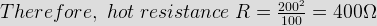
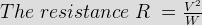
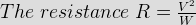

Old pagination
- Two resistances R1 and R2 give combined resistances 4.5Ω and 1Ω when they are connected in series and parallel respectively. What would be the values of these resistances?
Here, R1 + R2 = 4.5..................(1)
and R1.R2/(R1 + R2) = 1
⇒ R1.R2/4.5 = 1
⇒ R1.R2 = 4.5 ......................(2)
Combining (1) & (2) we get R1 = 1.5 Ω or 3 Ω and R2 = 3 Ω or 1.5 Ω - Which of the following may be value of resistivity of copper
The value of resistivity of copper is 1.7 X 10 - 6
- Two equal resistors R connected in series across a voltage source V dissipate power P. What would be the power dissipated in the same resistors when they are connected in parallel across the same voltage source ?
Say R is the resistance of the identical two resistors. When they are connected in series across a voltage source V, the equivalent resistance of the combination is 2R and then total power dissipated by the resistors will be P = V2/2R. When they are connected in parallel across the same voltage source V, the equivalent resistance of the combination is R/2 then total power dissipated by the resistors will be V2/R/2 = 4V2/2R = 4P.
- Two identical resistors are first connected in parallel then in series. The ratio of resultant resistance of the first combination to the second will be
- The ratio of the resistance of a 200W, 230V lamp to that of a 100W, 115V lamp will be
Resistance of the first lamp R1 = 2302/200 Ω
Resistance of the first lamp R2 = 1152/100 Ω
Therefore, R1/R2 = (2302/200)/(1152/100) = 2. - The resistance of 200W 200V lamp is
Resistance R = V2/W. Here, V = 200 V and W = 200 watts.
Therefore, resistance of 200W 200V lamp is 2002/200 = 200 Ω. - Two 1 kΩ 1 W resistors are connected in series. Their combine resistance and wattage will be
Wattage W = V2/R.......(I)
Here, for each resistor, W = 1 W and R = 1 kΩ and putting these values in equation (I), we get V2 = 1, When two 1 kΩ resistance are connected in series, combined resistance will be 2 kΩ and putting this value and and V2 = 1 in equation (I) we again get, combined wattage W = 1/2 watt. - Three 3 Ω resistors are connected to form a triangle. What is the resistance between any two of the corner?
Whenever we look at the said triangle from any two of its corners, we will find that it is just a parallel combination of one 3 Ω and one 6 Ω (3 + 3 = 6) resistor. Thus, the resistance aross these two corner points of the triangle will be 3X6/(3+6) = 18/9 = 2 Ω.
- A wire of 0.14 mm diameter and specific resistance 9.6 μΩ - cm is 440 cm long. The resistance of the wire will be
Cross - sectional area of the conductor is (π/4)X0.0142 = 0.000154 cm2.
The resistance will be 9.6X440/0.000154 = 27428571 μΩ = 27.4 Ω. - A 10 Ω resistor is stretched to increase its length double. Its resistance will now be
The resistance of a conductor is directly proportional to its length and inversely proportional to its cross - sectional area. As the wire is stretched to its double length, it's cross - sectional area will become half, hence, the resistance of the stretched wire will become 4 times.
- Specific resistance is measured in
The resistance R = ρl/a where R is the resistance of any substance in ohm, ρ is the specific resistance of material of that substance, l and a are length in cm and cross - sectional area in cm2 of that substance respectively. Therefore, ρ = R.a/l and its unit may be ohm X cm2/cm or ohm – cm.
- A wire of resistance R has it length and cross - section both doubled. Its resistance will become
The resistance of a conductor is directly proportional to its length and inversely proportional to its cross - sectional area. As the length and cross - sectional area both have become double, there will no change in resistance of the wire.
- A cube of material of side 1 cm has a resistance of 0.002 Ω between its opposite faces. If the same volume of the material has a length of 4 cm and a uniform cross - section, the resistance of this length will be
Here, the cube of material of side 1 cm has a resistance of 0.002 Ω between its opposite faces that means the resistivity of the material is 0.002 Ω. Now the length of the material has become 4 cm, hence for same volume 1 cm3 the cross - sectional area of the material will be 1/4 or 0.25 cm2. The new resistance will be 0.002X4/0.25 = 0.032 Ω.
- Resistance of which material does not change with change in temperature ?
Resistance is constant with changes in temperature in the metal alloy of constantan and manganin. This material has the temperature coefficient zero. They can be used for precision wire wound resistors, which do not change resistance when the temperature increased.
- The hot resistance of a tungsten lamp is about 10 times the cold resistance. Accordingly, cold resistance of a 100W, 200V lamp will be

Where, V is supply voltage and W is wattage rating of the lamp. Here, V = 200 V and W = 100 W,

∴ cold resistance of the lamp is 400 ⁄ 10 = 40 Ω - For same voltage, the ratio resistance of 100 W lamp to resistance of 25 W lamp is

Where, V is supply voltage and W is wattage rating of the lamp.
From, above equation it is clear that, for fixed voltage source , resistance of an electric lamp is inversely proportional to its wattage rating. That means, ratio of resistance will be just reverse of their ratio of wattage rating. - Which of the following has least resistivity?
Materials Resistivity at 20 °C Copper 1.68 X 10 - 8 Ω - m Lead 22 X 10 - 8 Ω - m Mercury 98 X 10 - 8 Ω - m Aluminium 2.65 X 10 - 8 Ω - m - Which of the following lamp has least resistance ?

Where, V is supply voltage and W is wattage rating of the lamp.
From, above equation it is clear that, for fixed voltage source , resistance of an electric lamp is inversely proportional to its wattage rating.
Here, 200W, 220V lamp has highest wattage rating, therefore its resistance will be least. - 200 resistors of 200 Ω each are connected in parallel. Their equivalent resistance will be
If N numbers of resistors of RΩ each are connected in parallel. Their equivalent resistance will be R ⁄ N.
- The resistance of 100W, 200V lamp is

 by
by